typedef void(* cv::TrackbarCallback) (int pos, void *userdata)
完成事件响应函数的声明与实现
def trackbar_callback (pos): print(pos)
cv.namedWindow(winname [, flags]) -> None
参数: winname表示窗口标题
参数flags支持的flag有:
WINDOW_NORMAL – 可以调整窗口大小
WINDOW_AUTOSIZE – 根据图像大小自动适应，不可调
WINDOW_KEEPRATIO – 可以保持比例窗口，调整大小
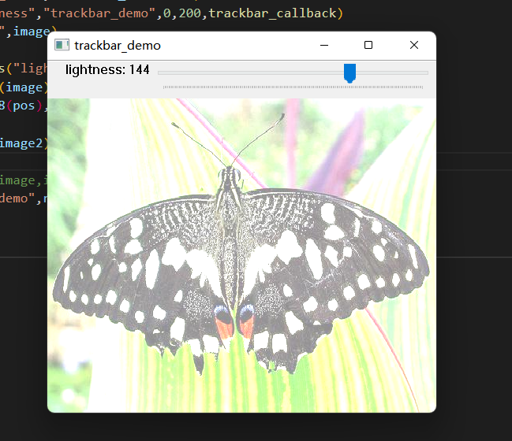 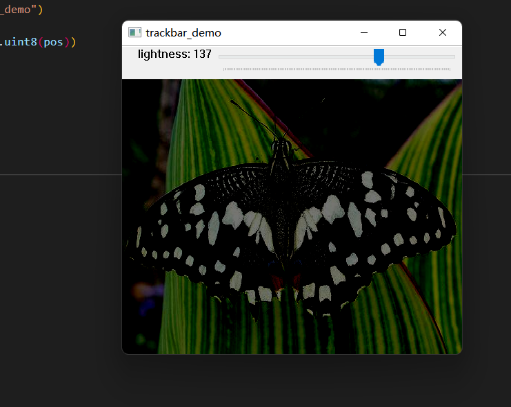
cv.waitKey( [, delay] ) ->retval
delay如果没有声明或者delay=0,表示一直阻塞
delay大于0，表示阻塞指定毫秒数
Retval返回的对应键盘键值，注意:在不同的操作系统中可能会有差异！
典型的retval = 27是ESC按键
检查返回键值，根据不同键值完成不同操作
推荐使用if-elif-else, switch-case方式python3.10支持
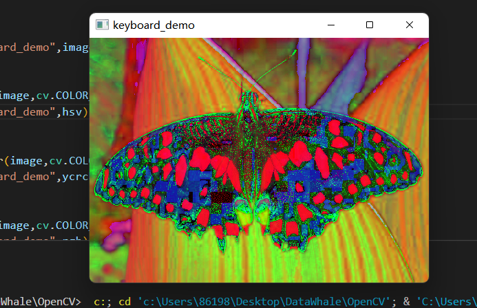 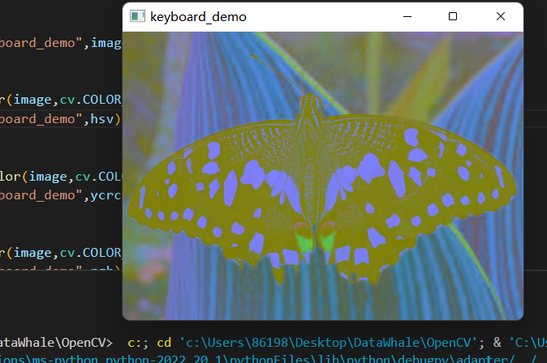 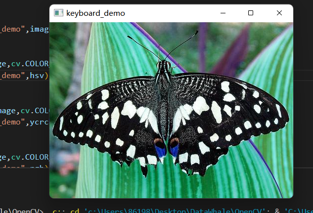 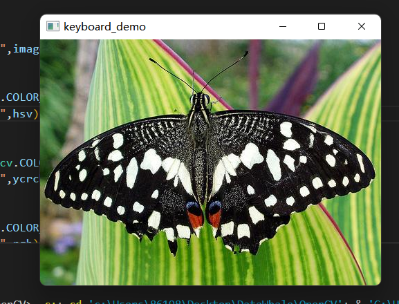
像素值取值范围在0~255之间，每一个值对应一个输出值，这样映射关系，可以先建立查找表LUT
根据输入得像素值作为index，在LUT中直接映射读取得到gamma校正之后得值
对256x256大小的图像，计算量对比：
不应用找表计算gamma - 65536次，
应用查找表计算gamma – 256次
色彩表
cv.applyColorMap(src, colormap[, dst]) ->dst
第一个参数输入图像
第二个参数是颜色表
dst返回图像
定义一个array里面存放各种LUT,定义一个滚动条,将每一个LUT放入pplyColorMap中,每拉动一个滚动条对应一个LUT
代码如下:
def task_3():
task=np.array([cv.COLORMAP_AUTUMN,cv.COLORMAP_JET,cv.COLORMAP_RAINBOW,cv.COLORMAP_OCEAN,cv.COLORMAP_SUMMER,cv.COLORMAP_SPRING,cv.COLORMAP_COOL,cv.COLORMAP_HSV,cv.COLORMAP_PINK,cv.COLORMAP_HOT,cv.COLORMAP_PARULA,cv.COLORMAP_MAGMA,cv.COLORMAP_INFERNO,cv.COLORMAP_PLASMA,cv.COLORMAP_VIRIDIS,cv.COLORMAP_TWILIGHT,cv.COLORMAP_TWILIGHT_SHIFTED,cv.COLORMAP_TURBO,cv.COLORMAP_DEEPGREEN])
cv.namedWindow("task_3",cv.WINDOW_KEEPRATIO)
image=cv.imread("C://Users//86198//Desktop//DataWhale//OpenCV//opencv//butterfly.jpg")
cv.createTrackbar("COLORMAP","task_3",0,19,trackbar_callback)
cv.imshow("task_3",image)
while True:
pos=cv.getTrackbarPos("COLORMAP","task_3")
dst=cv.applyColorMap(image,task[pos-1])
cv.imshow("task_3",dst)
c=cv.waitKey(1)
if c==27:
break
cv.waitKey(0)
cv.destroyAllWindows()结果如下:
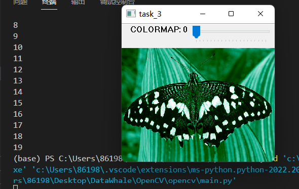 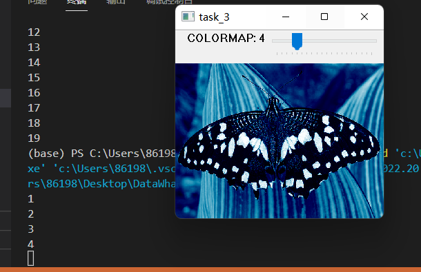 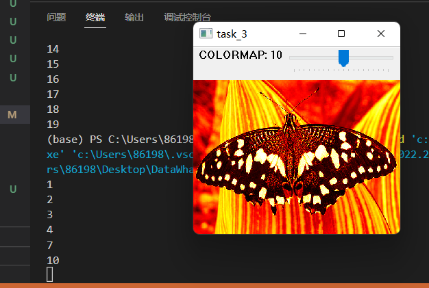 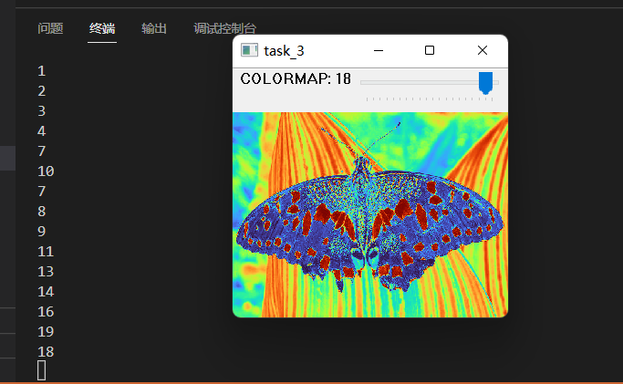
通道分离函数cv.split(m[, mv]) ->mv
m表示输入图像,必须是多通道图像
mv表示输出的
cv.merge(mv[, dst])->dst
mv表示各个通道
cv.mixChannels(src, dst, fromTo)->dst
src表示输入多通道图像
fromTo表示通道索引
dst表示返回结果
cv.inRange( src, lowerb, upperb[, dst]) -> dst
其中src是输入图像
Lowerb是低值
Upperb是高值
dst = (lowerb < src < upperb)
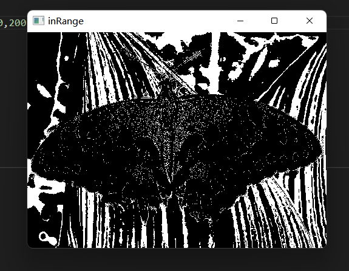 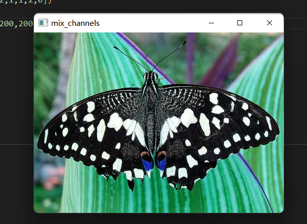